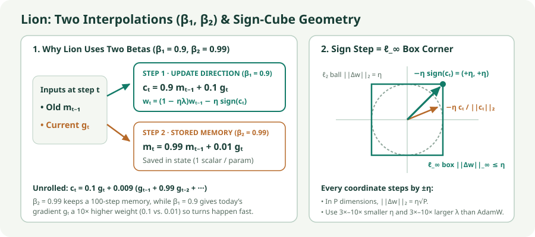

Lion: A Small State and a Sign Update
Jump to the loss-contour trajectory demo ↓
Unroll Lion’s two-$\beta$ momentum equations, see why the sign step corresponds to $\ell_\infty$ steepest descent, and scale $\eta$ and $\lambda$ from AdamW.
Discovered via symbolic program search (EvoLved Sign Momentum), Lion drops the second-moment buffer $v_t$ entirely. It stores a single momentum buffer $m_t$ per parameter and steps along the element-wise sign of an interpolated direction $c_t$.
1. One stored buffer $m_t$, two interpolations ($\beta_1,\beta_2$)
Starting from $m_0=0$, each step $t$ forms a temporary direction mixture $c_t$ using $\beta_1$ (typically $0.9$), updates the weights using $\operatorname{sign}(c_t)$, and then updates the stored momentum $m_t$ using a slower decay $\beta_2$ (typically $0.99$):
Why use two different coefficients $\beta_1=0.9$ and $\beta_2=0.99$ on the same signed gradient? Unroll $m_{t-1}=(1-\beta_2)\sum_{k=1}^{t-1}\beta_2^{t-1-k}g_k$ and substitute it into $c_t$:
Like Nesterov lookahead, this splits the timescale: $\beta_2=0.99$ maintains a long $100$-step directional memory in $m_{t-1}$, while $\beta_1=0.9$ gives today’s gradient $g_t$ a $10\times$ larger weight ($1-\beta_1=0.1$ vs. $1-\beta_2=0.01$) so the sign can flip promptly when the true gradient reverses.
Specifically, for $\operatorname{sign}(c_t)$ to flip against the stored memory $m_{t-1}$, the current gradient $g_t$ must oppose $m_{t-1}$ and exceed the threshold:

2. Geometry: $\ell_\infty$ steepest descent and constant step norm
Minimizing the linearized loss change $\langle c_t,\Delta w\rangle=\sum_{i=1}^P c_{t,i}\Delta w_i$ subject to an entry-wise $\ell_\infty$ box constraint $\|\Delta w\|_\infty=\max_i|\Delta w_i|\le\eta$ decouples coordinate by coordinate, giving the sign update:
Because every nonzero coordinate moves by $\pm\eta$ regardless of whether $|c_{t,i}|$ is $10^{-4}$ or $10^2$, a parameter tensor with $P$ nonzero coordinates takes a step of constant Euclidean ($\ell_2$) norm (before weight decay):
Near a minimum, even tiny gradients produce full steps of size $\pm\eta$ per coordinate, so Lion relies on a learning-rate decay schedule to settle.
3. Lab: separate the decision from the stored memory
On the shared quadratic dataset, inspect the current gradient $g_t$, the decision mixture $c_t$, and the updated memory $m_t$ stored after the step.
Lion: parameter path and loss by iteration
At zero weight decay, every nonzero mixture coordinate moves by exactly the learning rate in magnitude. Inspect the displacement to verify this.
- Inspect the step size: set $\lambda=0$; every step moves by $(-\eta,+\eta)$, $(+\eta,+\eta)$, etc. along the diagonals of the coordinate axes.
- Compare $\beta_1=0$ vs. $\beta_1=0.9$: setting $\beta_1=0$ reduces $c_t=g_t$ to pure SignSGD while $m_t$ sits unused.
- Compare learning rates $0.04$ and $0.01$: because $|\Delta w_i|=\eta$ never shrinks on its own, smaller $\eta$ reduces the limit-cycle oscillation around the minimum.
4. Converting $\eta$ and $\lambda$ from AdamW to Lion
In AdamW, noisy coordinates have $|\widehat m_{t,i}|/\sqrt{\widehat v_{t,i}}<1$ (typically $0.1$–$0.3$), whereas Lion moves every coordinate by $\pm 1\cdot\eta$. Consequently, Lion’s effective step norm is $3\times$–$10\times$ larger than AdamW’s at the same $\eta$.
When switching from AdamW ($\eta_{\text{Adam}},\lambda_{\text{Adam}}$) to Lion ($\eta_{\text{Lion}},\lambda_{\text{Lion}}$), divide $\eta$ by $3\text{–}10$ and multiply $\lambda$ by the same factor so the per-step weight decay shrinkage $-\eta\lambda w_{t-1}$ stays unchanged:
5. Implementation, update order, and state memory
# m is the single persistent state tensor per parameter.
c = beta1 * m + (1 - beta1) * grad # 1. Decision mixture uses OLD m
parameter *= 1 - lr * weight_decay # 2. Decoupled weight decay
parameter -= lr * c.sign() # 3. Sign update
m = beta2 * m + (1 - beta2) * grad # 4. Update stored memory for step t+1Why order matters: $c_t$ must be computed from $m_{t-1}$ before $m_{t-1}$ is overwritten by $m_t$. If you update $m_t$ first and take $\operatorname{sign}(\beta_1 m_t+(1-\beta_1)g_t)$, the effective weight on $g_t$ changes to $(1-\beta_1)+\beta_1(1-\beta_2)$.
Optimizer state memory: Lion stores one scalar per parameter—the signed momentum $m_{t,i}$ ($+4\text{ bytes/parameter}$ in FP32, matching SGD with Momentum and Muon, and half the $+8\text{ bytes/parameter}$ state of AdamW).
6. Questions worth answering
No. Gradient magnitudes determine both the decision mixture $c_t=\beta_1 m_{t-1}+(1-\beta_1)g_t$ and the stored memory $m_t=\beta_2 m_{t-1}+(1-\beta_2)g_t$. Only after $c_t$ is formed is its magnitude discarded by $\operatorname{sign}(c_t)$.
For any positive scalar $\alpha>0$, $\operatorname{sign}(\alpha x)=\operatorname{sign}(x)$, so rescaling $c_t$ as a whole cannot change its sign. Dividing only $m_{t-1}$ by $1-\beta_2^{t-1}$ before mixing with $g_t$ would alter the ratio between $m_{t-1}$ and $g_t$.
Lion applies $\operatorname{sign}(\cdot)$ to each matrix entry independently ($\ell_\infty$ steepest descent), setting every coordinate to $\pm 1$. Muon applies $\operatorname{sign}(\cdot)$ to the singular values of the matrix (spectral-norm steepest descent), setting every nonzero singular value to $1$ while preserving the singular vectors $U$ and $V$.
Sources
Chen et al., Symbolic Discovery of Optimization Algorithms; Google Research Lion PyTorch implementation.